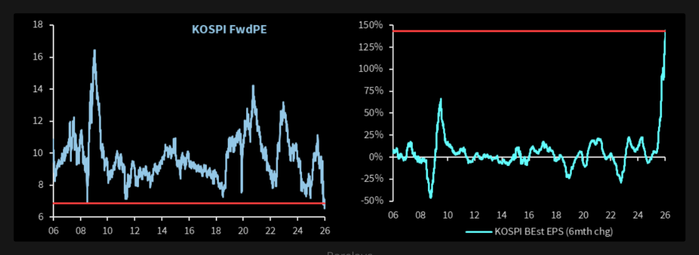
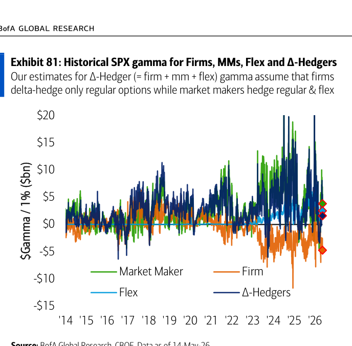
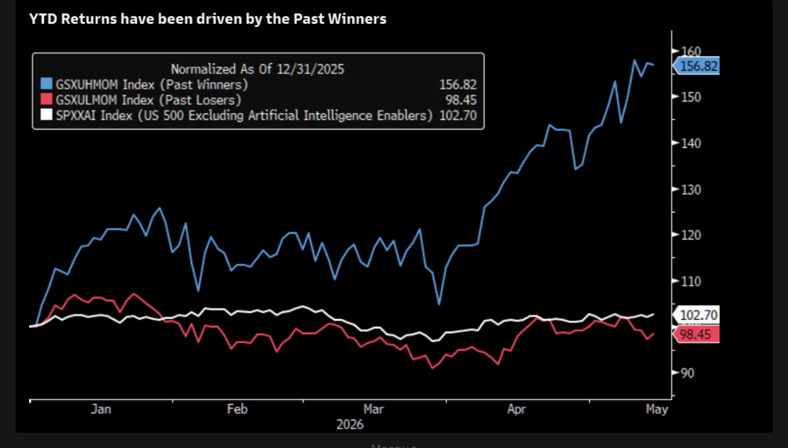
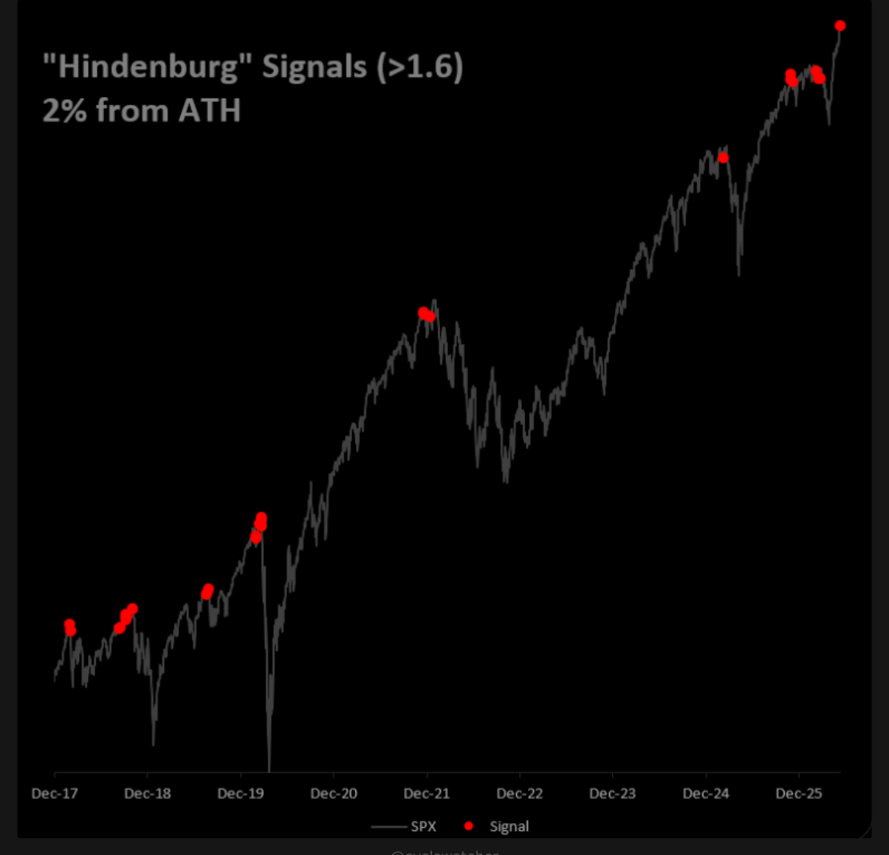
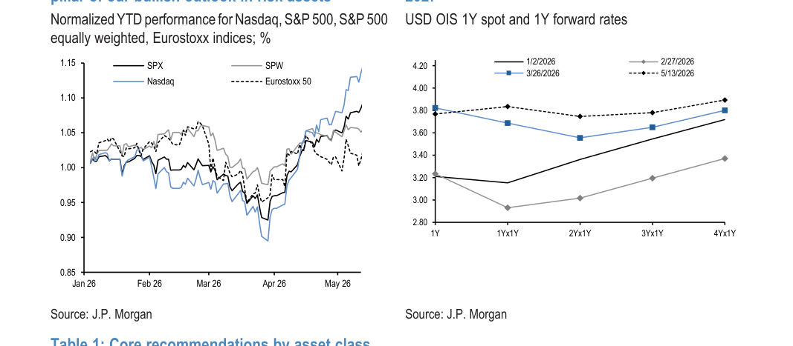
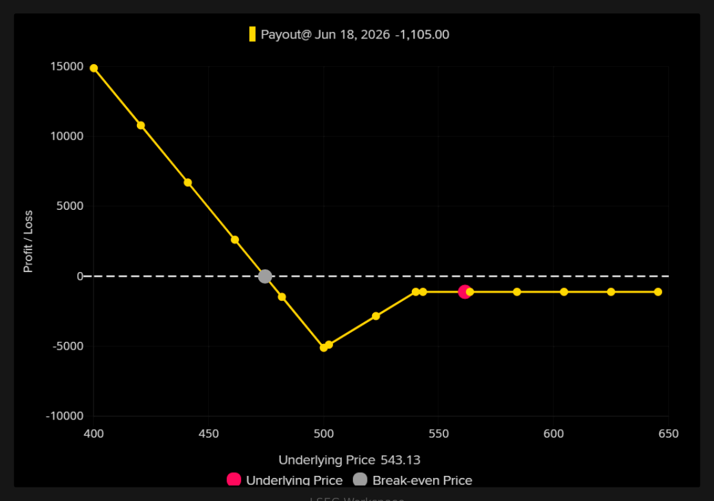
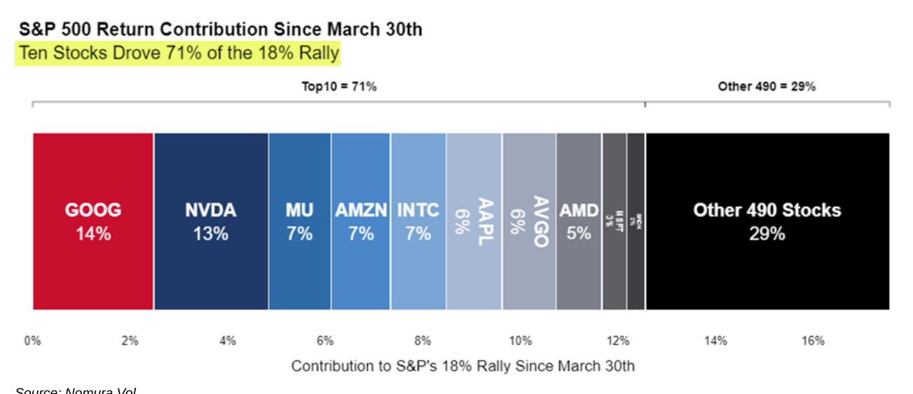

Trading_and_investment_papers plus Daily Shot when available.
Window PDFs17
Chart Extracts50
Top Charts5
Daily Shotskipped
Bottom line: This packet is the one-stop morning read: curated chart evidence first, Daily Shot context second, and source links at the end.
Top Charts
1. Korea's melt-up is earnings-backed, but increasingly stretched
2026-05-15 | the first real crack in the ai melt up 1 | page 3 source PDF
What it says: the first real crack in the ai melt up 1: LSEG Workspace Fundamentals KOSPI trading at 20-year lows in P/E multiples as consensus EPS estimates have been revised roughly 150% higher over the past six months. Things always look great following huge runs... Barclays Korea downside As we outlined earl...
Worldview update: The strongest tape is not pure speculation. Korea still has earnings revision support and compressed valuation, but the speed of the move means upside is becoming more fragile.
Portfolio/use: Respect the earnings support, but avoid treating a fast vertical move as low-risk beta. Watch revisions and reversal candles.

2. Options are shaping the path of the underlying
2026-05-16 | BofA Systematic Flows Monitor Systematic flows stabilize as equity | page 23 source PDF
What it says: BofA Systematic Flows Monitor Systematic flows stabilize as equity: Systematic Flows Monitor | 15 May 2026 23 Exhibit 81: Historical SPX gamma for Firms, MMs, Flex and ∆-Hedgers Our estimates for ∆-Hedger (= firm + mm + flex) gamma assume that firms delta-hedge only regular options while market makers hedge regular & flex S...
Worldview update: The rally has become more flow-mechanical. Fundamentals still matter, but call demand, vol compression, and dealer positioning are first-order timing variables.
Portfolio/use: Favor defined-risk upside and start adding downside while hedges are ignored.

3. Breadth is narrowing beneath the index
2026-05-15 | the momentum trade is one ceasefire away from total carnage 1 | page 2 source PDF
What it says: the momentum trade is one ceasefire away from total carnage 1: Marque High realized vol Realized volatility of momentum is at a multi-year high. As we all know, we are at one of the narrowest levels in terms of market breadth since the Dot-Com Bubble and briefly in 2023. Historically, the momentum factor has realized a...
Worldview update: SPX strength is increasingly an index-concentration signal. The macro read from headline index levels is polluted by a few large leaders.
Portfolio/use: Separate SPX direction from equal-weight health; prefer relative-value hedges over blunt index shorts.

4. Earnings are still carrying more weight than bears want
2026-05-15 | ford is apparently an ai company now 1 | page 3 source PDF
What it says: ford is apparently an ai company now 1: @cyclewatcher 0 FCF is now ok BofA now sees cloud/hyperscale aggregate FCF margin to reach ~0% by 2026-27 and they love it because, you know, it is the future.... "We see the AI capex cycle as sustainable as hyperscaler spending is increasingly supported by...
Worldview update: The bearish macro case needs earnings to crack. Until that happens, selloffs can remain buyable even if the rally quality deteriorates.
Portfolio/use: Track breadth of EPS revisions, not just index EPS. Narrow earnings strength is less durable.

5. Oil stress is feeding rates, while equities are looking through it
2026-05-17 | JPM The J P Morgan View Higher for Longer in Oil and Rates Own AI | page 3 source PDF
What it says: JPM The J P Morgan View Higher for Longer in Oil and Rates Own AI: Figure 1: Stick to our momentum view of “buying the winners” with AI upstream theme being the key pillar of our bullish outlook in risk assets Normalized YTD performance for Nasdaq, S&P 500, S&P 500 equally weighted, Eurostoxx indices; % 0.85 0.90 0.95 1.00...
Worldview update: The cleaner market signal is the cross-asset divergence: oil stress has mattered for rates, but equities are already looking through it. That calm is fragile if energy pressure starts feeding inflation or growth expectations again.
Portfolio/use: Track Brent, rates, and equity correlation together; use oil/rates stress as the warning light rather than treating headlines in isolation.

Daily Shot
Daily Shot was unavailable for this run.
Additional Chart Selection
6. AI is becoming a capex, power, and politics story
2026-05-16 | One Of Tech s Biggest Rotations Is Brewing | page 2 source PDF
What it says: One Of Tech s Biggest Rotations Is Brewing: LSEG Workspace LSEG Workspace IGV IGV has bounced aggressively since hitting major range lows some weeks ago. Software has consolidated over the past week, but continues inching higher. A close above $92 could re-ignite the squeeze. Note we are already back...
Worldview update: The AI trade is no longer only about demand and model progress. The constraint is shifting toward cash-flow intensity, grid capacity, permitting, and public tolerance.
Portfolio/use: Map AI exposure through power, grid, utilities, gas, and capex beneficiaries; be careful where capex consumes free cash flow.

7. The inventory cycle may be turning earlier than expected
2026-05-15 | Nomura Cross Asset BUYERS ARE HIGHER BUT THE BIGGER THEY COME THE | page 1 source PDF
What it says: Nomura Cross Asset BUYERS ARE HIGHER BUT THE BIGGER THEY COME THE: Some eyes on Rates again, as Macro can return to a role as primary catalyst after the “Micro Calm” of +++ Equities Earnings…where after the UST long-end supply yday and growing “Hawkish Concern” globally via the still-not-solved Energy / Petrochem supply sh...
Worldview update: A restocking impulse would keep nominal growth firmer than survey pessimism implies. That complicates simple slowdown trades.
Portfolio/use: Do not over-index on soft data if imports, orders, and inventory data confirm a turn.

8. Retail attention is a crowding signal again
2026-05-15 | GETTING STOPPED IN | page 2 source PDF
What it says: GETTING STOPPED IN: Retail trading activity has also clearly inflected higher. Our trading desk estimates show that retail trading volumes have risen by 28% since mid-April and a basket of retail favorite stocks ( GSXURFAV ) has rallied by 29% over the same period. The recent...
Worldview update: Retail flow is no longer just background noise. It is reinforcing single-name momentum and can stretch valuations past fundamentals.
Portfolio/use: Treat retail favorites as path-dependent momentum trades; use options or tight risk rather than valuation-only shorts.